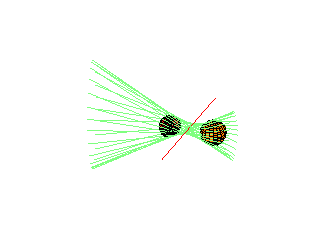

| Further Comments |
|
17 |
|
Alternative Geometric Description: This remarkable reducibility (but not the number 12 of components) may alternatively be understood as follows: Fixing l1 and l2, there is an action of the non-zero complex numbers C* on 3-space, preserving common transversals. Each component is one orbit of this action. |
 |
Theorem.
All of the geometry discussed here, including number of solutions, number of
families, etc., can be achieved over the real numbers.
In particular,
 There exist 4 spheres in R3 with 12 common tangents.
There exist 4 spheres in R3 with 12 common tangents.
There are 2 lines and a hyperboloid with all 12 familes (orbits) real.